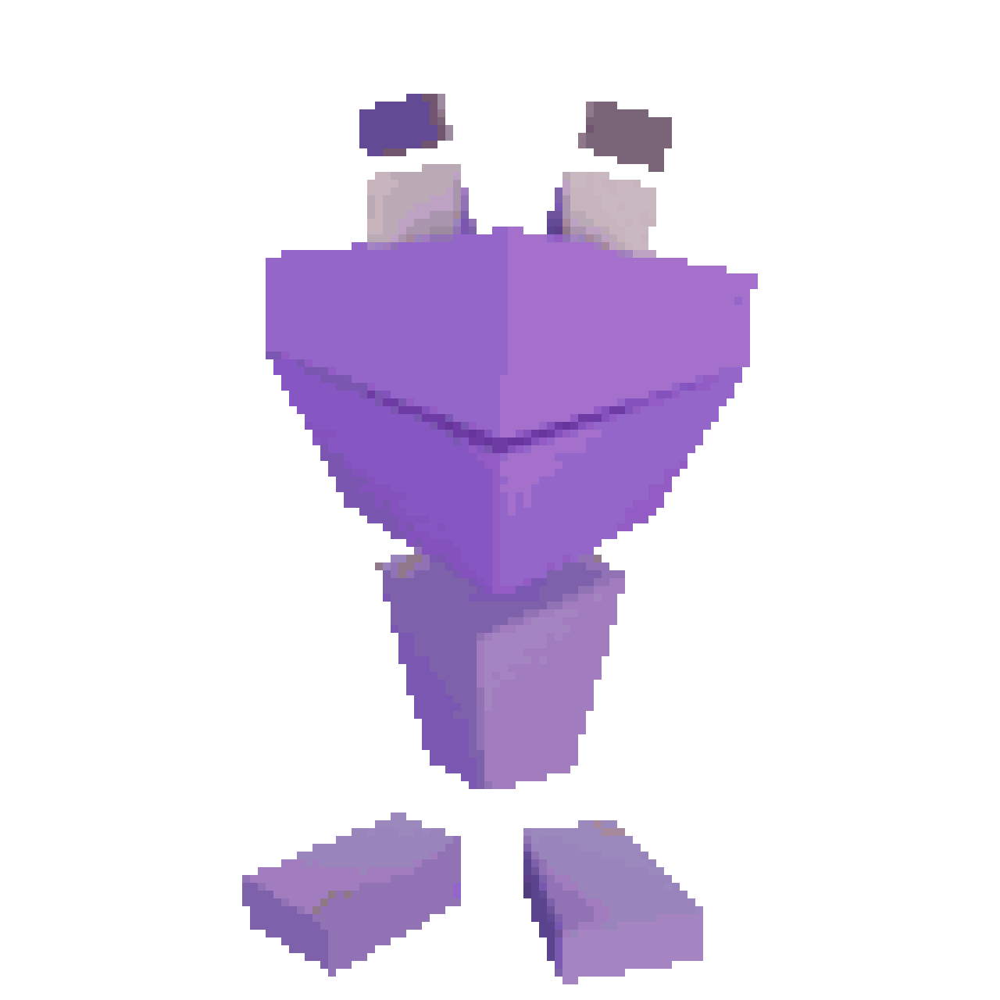
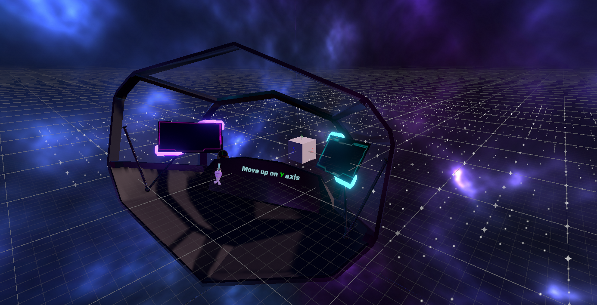
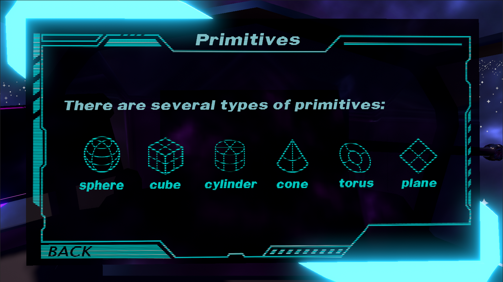
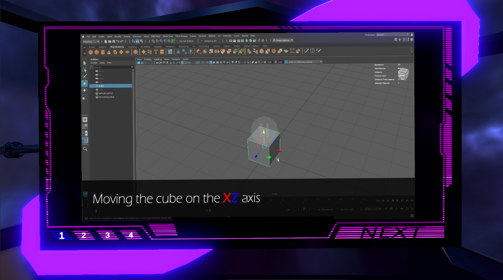
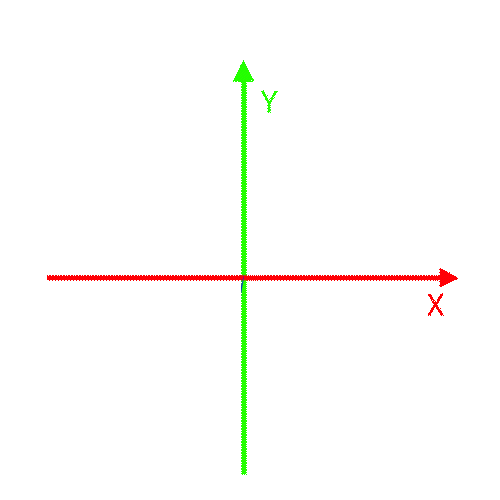
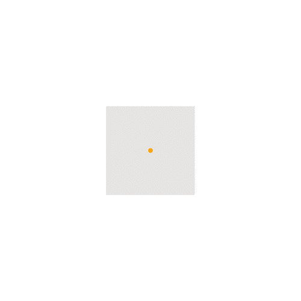
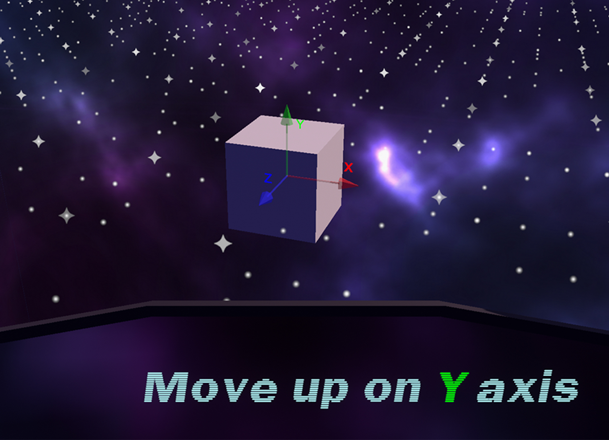

3D Space is an interactive learning game prototype designed to help first-year students at Nord University understand the fundamentals of 3D modelling. The idea came from noticing how often students struggled with basic concepts and terminology when starting to work in 3D software. We wanted to create a resource they could use before to learn the basics and then alongside their classes to look up unfamiliar terms and find solutions to their issues.
Overview
Henrik and I developed the project as part of the ExcITEd Summer Jobs programme, after submitting a proposal and being selected for a paid summer project under contract.

The game was built around NEVET, a small mascot who guides users through the material. The completed first chapter introduced users to creating basic shapes and manipulating them in 3D space. It covered transformation tools, axes, Maya shortcuts, entering precise values and working with pivot points. The explanations were accompanied by visual demonstrations and interactive exercises where users could practice what they had learned, such as moving, rotating and scaling a cube. The menu also included a dictionary of 3D terminology and a tips-and-tricks section with step-by-step solutions to common Maya problems.
We initially planned to develop a mobile app, but abandoned the idea early on because neither of us had an iPhone to test an iOS version. Developing only for Android would have excluded a chunk of students, so we decided to develop a browser-based version using Unity WebGL instead. This also meant students could access it on university computers without installing additional software. To keep the scope manageable, we focused on Maya rather than creating separate Maya and Blender versions, as Maya was the software taught at Nord.
My role
Henrik focused mainly on programming and interaction design, while I took responsibility for research, learning content and much of the visual design.
Before developing the content, I conducted a small survey asking students about their difficulties when getting started with 3D. I also drew on my own experience supporting students as a Teaching Assistant. Based on this, I planned the learning content and wrote all the text, including explanations, speech bubbles, dictionary entries and practical troubleshooting guides.
What I made
I designed the game's space environment and UI, created the 3D spaceship and screen elements in Maya, ...

one for longer explanation, and one for video content. I recorded and edited short demonstrations in Maya, which were incorporated into the learning experience to show practical workflows that were harder to explain through text alone.


I also created short looping animations in After Effects to go alongside with the explanations.



Technical challenges
During development, we had to design different interactions for different learning tasks rather than relying on a single system. Developing for WebGL also brought challenges we had not encountered with our previous Windows builds, particularly with video playback. I took on scripting to implement the video content and resolve issues with its integration.
Testing and feedback
We tested the prototype and used the feedback to make improvements.
"I’m colorblind so the color-coding doesn’t help with the axes, might be nice to display the letters during the task as well."
We added X, Y and Z labels next to the controls so nobody has to rely on color alone.

We could not find a similarly clear way to display the labels during rotation, so that part remained unresolved. Other feedback also revealed that some instructions were difficult to follow while performing the exercises, giving us areas to improve in how we presented information during interaction. Our testing was limited, however, and we only had one or two testers without previous experience using 3D software, so we could not fully evaluate the experience with its intended audience.
Chapter two
Although we originally planned to develop two chapters, we completed the first and I also wrote the full script for the second, which covered manipulating mesh components such as vertices, edges and faces. We created an early prototype of the interaction for connecting points to form faces, but did not implement the remaining exercises needed to complete the chapter.
What I'd do differently
We planned our workloads around our availability from the beginning: I committed to around 16 hours per week, while Henrik planned to work around 30 hours per week. Our responsibilities were divided accordingly, but the difference in pace sometimes meant that my content, designs and 3D assets became dependencies he had to wait for.
With the experience I have gained since then, I would take on more of the scripting and development myself, allowing Henrik to focus more on interaction design and look development. I would still enjoy taking responsibility for the research and teaching content.
What did I learn
This was the project that opened my eyes that I lean towards technical challenges rather than visual developement. Every time Henrik passed a technical problem to me, I enjoyed it a thousand times more than designing UI, models etc.
The project also taught me to be more aware of scope, particularly how much work is involved when every new concept requires its own explanations, visuals and interactions.